폐기물처리산업기사 (2013-09-28 기출문제)
1과목: 폐기물개론
1. 새로운 쓰레기 수집 시스템에 대한 다음 설명 중 틀린 것은?
- 모노레일 수송의 장점은 자동무인화이다.
- 관거수거는 쓰레기 발생빈도가 낮은 지역에서 현실성이 높다.
- 공기수송은 진공수송과 가압수송이 있으며 가압수송이 진공수송보다 수송거리를 길게 할 수 있다.
- 컨테이너 철도수송은 콘테이너 세정에 많은 물이 사용되는 단점이 있다.
(정답률: 84%)

2. 다음의 쓰레기의 성상분석 과정 중에서 일반적으로 가장 먼저 이루어지는 절차는?(오류 신고가 접수된 문제입니다. 반드시 정답과 해설을 확인하시기 바랍니다.)
- 분류
- 절단 및 분쇄
- 건조
- 화학적 조성 분석
(정답률: 17%)
3. 수분함량이 70%인 음식쓰레기 10톤을 소각처리하기 위하여 수분함량이 20%가 되도록 건조시켰을 때, 건조된 음식 쓰레기의 중량은? (단, 비중은 1.0 기준)
- 5.25톤
- 4.85톤
- 4.35톤
- 3.75톤
(정답률: 93%)
4. 인구 110,000명이고, 쓰레기배출량이 1.1kg/인·일이라 한다. 쓰레기의 밀도는 250kg/m3라고 하면 적재량이 5m3인 트럭의 하루 운반 횟수는? (단, 트럭 1대 기준)
- 69회
- 81회
- 97회
- 101회
(정답률: 100%)
5. 선별효율을 나타내는 지표로 Worrell의 제안식을 적용한 선별결과가 다음과 같을 때, 선별효율은? (단, 투입량 : 10톤/일, 회수량 : 7톤/일(회수대상물질 5톤/일), 제거대상물질 : 3톤/일(회수대상물질 0.5톤/일 이다.)
- 약 50%
- 약 60%
- 약 70%
- 약 80%
(정답률: 65%)
6. 파쇄장치 중 전단파쇄기에 관한 설명으로 틀린 것은?
- 주로 목재류, 플라스틱류 및 종이류를 파쇄하는 데 이용된다.
- 이물질의 혼입에 대해 약하나 파쇄물의 크기를 고르게 할 수 있다.
- 충격파쇄기에 비하여 대체적으로 파쇄 속도가 빠르다.
- 고정칼, 왕복 또는 회전칼과의 교합에 의하여 폐기물을 전단한다.
(정답률: 94%)
7. 어느 도시 폐기물 중 가연성 성분이 65%이고 불연성 성분이 35%일 때 다음의 조건하에서 RDF를 생산한다면 일주일 동안에 생산된 양은 몇 m3인가? (단, 회수된 가연성 폐기물 전량이 RDF로 전환됨)
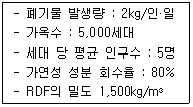
- 121
- 185
- 227
- 264
(정답률: 54%)
8. 함수율이 각각 45%와 93%인 도시 쓰레기와 하수 슬러지를 함께 매립하려 한다. 도시 쓰레기와 슬러지를 중량비로 8 : 2로 혼합할 때 혼합된 쓰레기의 함수율은?
- 약 45%
- 약 50%
- 약 55%
- 약 60%
(정답률: 80%)
9. 탈수를 통해 폐기물의 함수율을 90%에서 60%로 감소시켰다. 이 경우 폐기물의 무게는 처음 무게의 몇 %로 감소하는가? (단, 비중은 1.0 기준)
- 25%
- 40%
- 65%
- 80%
(정답률: 87%)
10. 인구 3,800명인 어느 지역에서 하루 동안 발생되는 쓰레기를 수거하기 위하여 용량 8m3인 청소차량이 5대, 1일 2회 수거, 1일 근무시간이 8시간인 환경미화원이 5명 동원된다. 이 쓰레기의 적재밀도가 0.3ton/m3일 때 MHT 값은? (단, 기타 조건은 고려하지 않음)
- 1.38 man·hour/ton
- 1.42 man·hour/ton
- 1.67 man·hour/ton
- 1.83 man·hour/ton
(정답률: 82%)
11. 다음 중 쓰레기의 발생량 조사 방법이 아닌 것은?
- 경향법
- 적재차량 계수분석법
- 직접 계근법
- 물질 수지법
(정답률: 95%)
12. 밀도가 250kg/m3인 폐기물 1000kg을 소각하였더니 200kg의 소각잔류물이 발생하였다. 이 소각잔류물의 밀도가 1,000 kg/m3일 때 부피 감소율은?
- 91%
- 93%
- 95%
- 97%
(정답률: 67%)
13. 다음의 물질회수를 위한 선별방법 중 플라스틱에서 종이를 선별할 수 있는 방법으로 가장 적절한 것은?
- 와전류선별
- Jig 선별
- 광학 선별
- 정전기적 선별
(정답률: 95%)
14. 파쇄기로 15cm의 폐기물을 3cm로 파쇄 하는데 에너지가 50kW·h/ton이 소요되었다. 20cm의 폐기물을 4cm로 파쇄시 소요되는 에너지량은? (단, Kick의 법칙을 이용)
- 32 kW·h/ton
- 37 kW·h/ton
- 41 kW·h/ton
- 50 kW·h/ton
(정답률: 62%)
15. 어떤 쓰레기의 입도를 분석한 결과, 입도누적곡선상의 10%, 30%, 60%, 90%의 입경이 각각 2mm, 5mm, 10mm, 20mm이었다고 한다면 유효입경은?
- 2mm
- 5mm
- 7mm
- 10mm
(정답률: 74%)
16. 모든 인자를 시간에 따른 함수로 나타낸 후, 시간에 대한 함수로 표시된 각 인자 간의 상호관계를 수식화하여 쓰레기 발생량을 예측하는 방법은?
- 동적모사모델
- 다중회귀모델
- 시간인자모델
- 다중인자모델
(정답률: 100%)
17. 쓰레기 관리체계에서 가장 비용이 많이 드는 과정은?
- 수거 및 운반
- 처리
- 저장
- 재활용
(정답률: 100%)
18. 10m3의 폐기물을 압축비 8 로 압축하였을 때 압축 후의 부피는?
- 0.85m3
- 0.95m3
- 1.15m3
- 1.25m3
(정답률: 91%)
19. 수거노선 설정시 유의사항으로 틀린 것은?
- 언덕인 경우 위에서 내려가며 수거한다.
- 아주 많은 양의 쓰레기가 발생되는 발생원은 하루 중 가장 먼저 수거한다.
- 출발점은 차고와 가까운 곳으로 한다.
- 가능한 한 반시계방향으로 설정한다.
(정답률: 100%)
20. 밀도 680kg/m3인 쓰레기 200kg이 압축되어 밀도가 960kg/m3으로 되었다면 압축비는?
- 약 1.1
- 약 1.4
- 약 1.7
- 약 2.1
(정답률: 93%)
2과목: 폐기물처리기술
21. 퇴비화 과정에서 팽화제로 이용되는 물질과 가장 거리가 먼 것은?
- 톱밥
- 왕겨
- 볏짚
- 하수슬러지
(정답률: 93%)
22. 이론공기량을 사용하여 C3H8을 연소시킨다. 건조 가스 중 (CO2)max는?
- 약 13.7%
- 약 15.7%
- 약 18.7%
- 약 21.7%
(정답률: 39%)
23. 60g의 에탄(C2H6)이 완전연소 할 때 필요한 이론 공기 부피는? (단, 0℃, 1기압 기준)
- 약 450L
- 약 550L
- 약 650L
- 약 750L
(정답률: 47%)
24. 매립지로부터 가스가 발생될 것이 예상 되면 발생가스에 대한 적절한 대책이 수립되어야 한다. 다음 중 최소한의 환기 설비 또는 가스대책 설비를 계획하여야 하는 경우와 가장 거리가 먼 것은?
- 발생가스의 축적으로 덮개설비에 손상이 갈 우려가 있는 경우
- 식물 식생의 과다로 지중 가스 축척이 가중되는 경우
- 유독가스가 방출될 우려가 있는 경우
- 매립지 위치가 주변개발지역과 인접한 경우
(정답률: 100%)
25. 폐기물 소각의 장점이 아닌 것은?
- 부피감소가 가능하다.
- 위생적 처리가 가능하다.
- 폐열이용이 가능하다.
- 2차 대기오염이 적다.
(정답률: 90%)
26. 7,570m3/d 유량의 하수처리장에서 유입수 BOD와 SS의 농도는 각각 200mg/L이고, 1차 침전지에 의하여 SS는 50%, BOD는 30%가 제거된다고 할 때 1차 침전지에서의 슬러지 발생량(건조고형물기준)은? (단, 생물학적 분해는 없으며 BOD 제거는 SS제거로 인함)
- 약 630kg/d
- 약 760kg/d
- 약 850kg/d
- 약 920kg/d
(정답률: 93%)
27. 다음 중 차수막에 대한 설명으로 적당하지 않은 것은?
- 연직차수막은 지중에 차수층이 수직방향으로 분포하고 있는 경우 시공한다.
- 연직차수막은 지하에 매설하기 때문에 차수성 확인이 어렵다.
- 표면차수막은 원칙적으로 지하수 집배수 시설을 시공한다.
- 표면차수막은 단위면적당 공사비는 싸지만 매립지 전체를 시공하는 경우가 많아 총공사비는 비싸다.
(정답률: 70%)
28. 다음과 같은 조건의 축분과 톱밥을 혼합한 쓰레기의 함수율은? (단, 비중은 1.0기준)
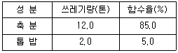
- 73.6%
- 75.6%
- 77.6%
- 79.6%
(정답률: 80%)
29. 폐기물 매립지의 침출수 처리에 많이 사용되는 펜톤 시약의 조성으로 옳은 것은?
- 과산화수소 + Alum
- 과산화수소 + 철염
- 과망간산칼륨 + 철염
- 과망간산칼륨 + Alum
(정답률: 80%)
30. 수거 분뇨를 혐기성 처리후 유출수를 20배 희석한 후 2차 처리를 하여 BOD 20mg/L인 방류수를 배출하였다. 2차 처리시설의 BOD 제거율은? (단, 혐기성소화조 유입 분뇨의 BOD는 20,000mg/L, BOD 제거율은 80%이고, 희석수의 BOD 농도는 무시한다.)
- 86%
- 90%
- 94%
- 97%
(정답률: 50%)
31. 분뇨처리장에서 분뇨를 소화 후 소화된 슬러지를 탈수하고 있다. 소화된 슬러지의 발생량은 1일 분뇨 투입량의 10%이며 소화된 슬러지의 함수량이 95% 라면 1일 탈수된 슬러지의 양은? (단, 슬러지의 비중은 모두 1.0 이고, 분뇨투입량은 200kL/day 이며, 탈수된 슬러지의 함수율은 75%)
- 7m3
- 6m3
- 5m3
- 4m3
(정답률: 59%)
32. 다음 조건과 같은 매립지내 침출수가 차수층을 통과하는데 소요되는 시간은?
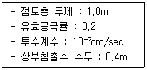
- 약 7.83년
- 약 6.53년
- 약 5.33년
- 약 4.53년
(정답률: 55%)
33. 질소와 인을 제거하기 위한 생물학적 고도처리공법(A2O)의 공정 중 호기조의 역할과 가장 거리가 먼 것은?
- 질산화
- 탈질화
- 유기물의 산화
- 인의 과잉섭취
(정답률: 80%)
34. 유해폐기물의 처리기술 중 유기성 고형화에 관한 설명으로 옳지 않은 것은?
- 처리비용이 고가이다.
- 최종 고화체의 체적 증가가 다양하다.
- 수밀성이 크며 다양한 폐기물에 적용이 가능하다.
- 미생물, 자외선에 대한 안정성이 강하다.
(정답률: 50%)
35. 쓰레기의 성분이 탄소 85%, 수소 10%, 산소 2%, 황 3%로 구성되어 있다면 이를 5.0kg 연소시킬 때 필요한 이론공기량(Sm3)은?
- 26.2
- 30.3
- 42.7
- 51.3
(정답률: 39%)
36. 매립지에서 흔히 사용되는 합성차수막이 아닌 것은?
- LFG
- HDPE
- CR
- PVC
(정답률: 77%)
37. 매립물의 조성이 C40H83O30N 인 경우 이 매립물 1mol 당 발생하는 메탄은 몇 mol인가? (단, 혐기성 반응이다.)
- 22.5
- 28.5
- 32.5
- 38.5
(정답률: 67%)
38. 어느 도시에서 소각대상 폐기물이 1일 100톤 발생되고 있다. 스토커 소각로에서 화상부하율 200kg/m2·hr로 설계하고자 하는 경우 소요되는 스토커의 화상면적은? (단, 소각로는 1일 12시간 운행함)
- 약 21m2
- 약 32m2
- 약 42m2
- 약 64m2
(정답률: 84%)
39. 인구 400,000명에 1인당 하루 1.15kg의 쓰레기를 배출하는 지역에 면적이 3,000,000m2의 매립장을 건설하려고 한다. 강우량은 1,250mm/year인 경우 강우로 인한 침출수 발생량은? (단, 강우량 중 60%는 증발되고 40%만 침출수로 발생된다고 가정한다. 침출수 비중은 1.0)
- 500,000톤/년
- 1,000,000톤/년
- 1,500,000톤/년
- 2,000,000톤/년
(정답률: 65%)
40. 매립지내 폐기물 분해에 대한 단계별 설명과 가장 거리가 먼 것은?
- 1단계(호기성단계) : 매립조작시 혼입된 공기가 호기성 분위기를 유도하여 호기성 미생물에 의해 산소가 증가한다.
- 2단계(통성혐기성단계) : 혐기성 미생물이 우점균이 되어 각종 폐기물을 분해하여 저급지방산, 이산화탄소, 암모니아 가스 등을 생성한다.
- 3단계(혐기성단계) : 메탄생성균과 메탄과 이산화탄소로 분해하는 미생물로 인해 메탄이 생성되기 시작한다.
- 4단계(혐기성안정화단계) : 완전한 혐기성분위기가 유지되면서 메탄생성균이 우점종이 되어 유기물 분해와 동시에 메탄과 이산화탄소가 생성된다.
(정답률: 65%)
3과목: 폐기물 공정시험 기준(방법)
41. 다음은 자외선/가시선 분광법으로 수은을 측정하는 방법이다. ( )안의 내용으로 옳은 것은?
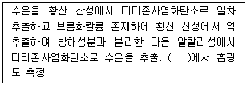
- 340nm
- 490nm
- 540nm
- 580nm
(정답률: 50%)
42. 유리전극법으로 수소이온농도를 측정할 때 간섭물질에 대한 내용으로 옳지 않은 것은?
- 유리전극은 일반적으로 용액의 색도, 탁도에 간섭을 받지 않는다.
- 유리전극은 산화 및 환원성 물질 그리고 염도에 간섭을 받는다.
- pH 10 이상에서 나트륨에 의해 오차가 발생할 수 있는데 이는 “낮은 나트륨 오차 전극”을 사용하여 줄일 수 있다.
- pH는 온도변화에 따라 영향을 받는다.
(정답률: 57%)
43. '곧은 섬유와 섬유 다발' 형태가 아닌 석면의 종류는? (단, 편광현미경법 기준)
- 직섬석
- 청석면
- 갈석면
- 백석면
(정답률: 75%)
44. 총칙에서 규정하고 있는 '함침성 고상폐기물'의 정의로 옳은 것은?
- 종이, 목재 등 수분을 흡수하는 변압기 내부 부재(종이, 나무와 금속이 서로 혼합되어 분리가 어려운 경우를 포함)를 말한다.
- 종이, 목재 등 수분을 흡수하는 변압기 내부 부재(종이, 나무와 금속이 서로 혼합되어 분리가 어려운 경우는 제외)를 말한다.
- 종이, 목재 등 기름을 흡수하는 변압기 내부 부재(종이, 나무와 금속이 서로 혼합되어 분리가 어려운 경우를 포함)를 말한다.
- 종이, 목재 등 기름을 흡수하는 변압기 내부 부재(종이, 나무와 금속이 서로 혼합되어 분리가 어려운 경우는 제외)를 말한다.
(정답률: 75%)
45. 취급 또는 저장하는 동안에 기체 또는 미생물이 침입하지 아니하도록 내용물을 보호하는 용기는?
- 차단용기
- 밀폐용기
- 기밀용기
- 밀봉용기
(정답률: 77%)
46. 폐기물공정시험기준(방법) 상 이온전극법에 의해 정량되는 물질은?
- 구리
- 시안
- 크롬
- 비소
(정답률: 78%)
47. 다음 용어의 정의로 옿지 않은 것은?
- 무게를 '정밀히 단다'라 함은 규정된 수치의 무게를 0.1mg까지 다는 것을 말한다.
- '정확히 취하여'라 하는 것은 규정한 양의 액체를 홀피펫으로 눈금까지 취하는 것을 말한다.
- '냄새가 없다'라고 기재한 것은 냄새가 없거나 또는 그의 없는 것을 표시하는 것이다.
- '바탕시험을 하여 보정한다'라 함은 시료에 대한 처리 및 측정을 할 때 시료를 사용하지 않고 같은 방법으로 조장한 측정치를 빼는 것을 뜻한다.
(정답률: 45%)
48. 6톤 운반차량에 적재되어 있는 폐기물의 시료채취 방법으로 옳은 것은?
- 적재 폐기물을 평면상에서 6등분한 후 각 등분마다 시료를 채취한다.
- 적재 폐기물을 평면상에서 9등분한 후 각 등분마다 시료를 채취한다.
- 적재 폐기물을 평면상에서 10등분한 후 각 등분마다 시료를 채취한다.
- 적재 폐기물을 평면상에서 14등분한 후 각 등분마다 시료를 채취한다.
(정답률: 85%)
49. 유기물 함량이 낮은 시료에 적용하는 산분해법은?
- 염산 분해법
- 황산 분해법
- 질산 분해법
- 염산-질산 분해법
(정답률: 71%)
50. 감염성미생물(아포균 검사법) 측정에 적용되는 '지표생물포자'에 관한 설명으로 옳은 것은?
- 감염성 폐기물의 멸균 잔류물에 대한 멸균 여부의 판정은 병원성미생물보다 열저항성이 약하고 비병원성인 아포형성 미생물을 이용하는데 이를 지표생물포자라 한다.
- 감염성 폐기물의 멸균 잔류물에 대한 멸균 여부의 판정은 병원성미생물보다 열저항성이 강하고 비병원성인 아포형성 미생물을 이용하는데 이를 지표생물포자라 한다.
- 감염성 폐기물의 멸균 잔류물에 대한 멸균 여부의 판정은 비병원성미생물보다 열저항성이 약하고 병원성인 아포형성 미생물을 이용하는데 이를 지표생물포자라 한다.
- 감염성 폐기물의 멸균 잔류물에 대한 멸균 여부의 판정은 비병원성미생물보다 열저항성이 강하고 병원성인 아포형성 미생물을 이용하는데 이를 지표생물포자라 한다.
(정답률: 64%)
51. 다음은 석면(편광현미경법)의 시료 채취양에 관한 내용이다. ( )안의 내용으로 옳은 것은?
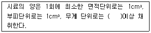
- 1g
- 2g
- 3g
- 4g
(정답률: 75%)
52. 자외선/가시선 분광광도계에 관한 내용으로 옳지 않은 것은?
- 광원부-파장성택부-시료부-측광부로 구성된다.
- 광원부의 광원으로 가시부와 근자외부의 광원으로는 텅스텐램프가 사용된다.
- 광원부의 광원으로 자외부의 광원으로는 주로 중수소방전관이 사용된다.
- 시료액의 흡수파장인 370nm이상일 때는 석영 또는 경질유리 흡수셀을 사용한다.
(정답률: 36%)
53. 대상폐기물의 양이 35톤인 경우 시료의 최소 수로 적절한 것은?
- 20
- 30
- 36
- 40
(정답률: 79%)
54. 유도결합플라스마-원자발광분광법으로 6가크롬을 측정할 때 정밀도(RSD) 기준은?
- ±0.5% 이내
- ±5% 이내
- ±15% 이내
- ±25% 이내
(정답률: 87%)
55. 다음은 강열감량 및 유기물함량을 중량법으로 측정하는 방법에 대한 내용이다. ( )안에 옳은 내용은?
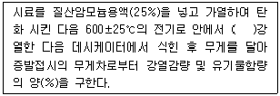
- 2시간
- 3시간
- 4시간
- 6시간
(정답률: 44%)
56. 기름성분을 중량법으로 측정할 때 정량한계 기준은?
- 0.1% 이하
- 0.5% 이하
- 1.0% 이하
- 5.0% 이하
(정답률: 88%)
57. 다음은 폐기물공정시험기준(방법)상의 용어이다. ( )안에 들어갈 수치 중 가장 작은 것은?
- '방울수'는 ( )℃에서 정제수 20방울을 적하시켰을 때 부피가 약 1mL가 된다.
- 냉수는 ( )℃ 이하를 말한다.
- '약' 이라 함은 기재된 양에 대해서 ±( )% 이상의 차가 있어서는 안된다.
- 진공이라 함은 ( )mmHg 이하의 압력을 말한다.
(정답률: 80%)
58. 폐기물 용출시험방법의 용출조작에 관한 설명으로 옳지 않은 것은?
- 여과가 어려운 경우에는 원심분리기를 사용하여 매분당 3000회전 이상으로 20분 이상 원심 분리한 다음, 상징액을 적당량 취하여 용출시험용 시료용액으로 한다.
- 용출시험의 결과는 시료 중의 수분함량 보정을 위해 함수율 95% 이상인 시료에 한하여 [5/(100-시료 함수율(%))]를 곱하여 계산된 값으로 한다.
- 시료조제가 끝난 혼합액은 상온, 상압에서 진탕회수가 매분 당 약 200회, 진폭 4~5cm 정도로 6시간 연속진탕한다.
- 진탕한 시료는 1.0㎛의 유리섬유여과지로 여과하고 여과액을 적당량 취하여 용출시험용 시료용액으로 한다.
(정답률: 87%)
59. 납을 자외선/가시선 분광법으로 측정할 때 간섭물질에 관한 설명이다. ( )안에 옳은 내용은?
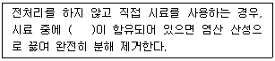
- 비스무트(Bi)화합물
- 다량의 유기물
- 철, 알루미늄
- 시안화합물
(정답률: 57%)
60. 다음은 수은을 원자흡수분광광도법으로 측정하는 방법이다. ( )안에 옳은내용은?
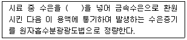
- 아연분말
- 이염화주석
- 염산히드록실아민
- 과망간산칼륨
(정답률: 75%)
4과목: 폐기물 관계 법규
61. 폐기물처분시설 또는 재활용 시설 중 음식물류 폐기물을 대상으로 하는 시설의 기술관리인 자격기준과 가장 거리가 먼 것은?
- 화공산업기사
- 토목산업기사
- 토양환경기사
- 전기기사
(정답률: 44%)
62. 환경부장관 또는 시도지사가 폐기물 처리 공제조합에 방치폐기물의 처리를 명할 때에는 처리량과 처리기간에 대하여 대통령령으로 정하는 범위 안에서 할 수 있도록 명하여야 한다. 이와 같이 폐기물 처리 공제조합에 처리를 명할 수 있는 방치폐기물의 처리량에 대한 기준으로 옳은 것은? (단, 폐기물처리업자가 방치한 폐기물의 경우)
- 그 폐기물처리업자의 폐기물 허용보관량의 1.5배 이내
- 그 폐기물처리업자의 폐기물 허용보관량의 2.0배 이내
- 그 폐기물처리업자의 폐기물 허용보관량의 2.5배 이내
- 그 폐기물처리업자의 폐기물 허용보관량의 3.0배 이내
(정답률: 70%)
63. 폐기물처리시설은 환경부령으로 정하는 기준에 맞게 설치하되, 환경부령으로 정하는 규모 미만의 폐기물 소각시설을 설치, 운영하여서는 아니 된다. 이를 위반하여 설치가 금지되는 폐기물 소각시설을 설치, 운영한 자에 대한 벌칙 기준은?(오류 신고가 접수된 문제입니다. 반드시 정답과 해설을 확인하시기 바랍니다.)
- 1년 이하의 징역이나 5백만원 이하의 벌금
- 2년 이하의 징역이나 1천만원 이하의 벌금
- 3년 이하의 징역이나 2천만원 이하의 벌금
- 5년 이하의 징역이나 3천만원 이하의 벌금
(정답률: 60%)
64. 다음은 과징금의 부과 및 납부에 관한 내용이다. ( )안에 옳은 내용은?
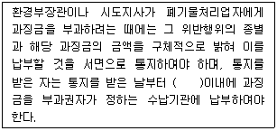
- 5일
- 10일
- 20일
- 30일
(정답률: 85%)
65. 폐기물처리시설인 재활용시설 중 기계적 재활용시설과 가장 거리가 먼 것은?
- 연료화 시설
- 골재가공시설
- 증발·농축 시설
- 유수 분리 시설
(정답률: 58%)
66. 환경부령으로 정하는 폐기물처리시설의 설치를 마친 자는 환경부령으로 정하는 검사기관 으로부터 검사를 받아야 한다. 다음 중 소각시설의 검사기관과 가장 거리가 먼 것은?
- 한국환경공단
- 한국건설기술연구원
- 한국기계연구원
- 한국산업기술시험원
(정답률: 37%)
67. 의료폐기물 중 일반의료폐기물이 아닌 것은?
- 혈액이 함유되어 있는 탈지면
- 수액세트
- 파손된 유리재질의 시험기구
- 일회용 주사기
(정답률: 70%)
68. 폐기물관리법에서 사용하는 용어의 정의로 틀린 것은?
- 처분 : 폐기물의 소각, 중화, 파쇄, 고형화 등의 중간처분과 매립하거나 해역으로 배출하는 등의 최종처분을 말한다.
- 폐기물감량화시설 : 생산 공정에서 발생하는 폐기물의 양을 줄이고, 사업장내 재활용을 통하여 폐기물 배출을 최소화하는 시설로서 대통령령으로 정하는 시설을 말한다.
- 처리 : 폐기물의 수집, 운반, 보관, 재활용, 처분을 말한다.
- 폐기물 : 쓰레기, 연소재, 오니, 폐유, 폐산, 폐알칼리 및 동물의 사체 등으로 환경오염을 유발시킬 수 있는 물질로서 대통령령으로 정하는 물질을 말한다.
(정답률: 55%)
69. 폐기물을 수탁하여 처리하는 자는 영업정지, 휴업, 폐업 또는 폐기물처리시설의 사용정지 등의 사유로 환경부령으로 정하는 사업장폐기물을 처리할 수 없는 경우에는 환경부령으로 정하는 바에 따라 지체 없이 그 사실을 사업장폐기물의 처리를 위탁한 배출자에게 통보하여야 한다. 이를 위반하여 통보하지 아니한 자에게 부과되는 과태료 기준은?
- 100만원 이하의 과태료
- 200만원 이하의 과태료
- 300만원 이하의 과태료
- 500만원 이하의 과태료
(정답률: 36%)
70. 주변지역 영향 조사대상 폐기물처리시설에 대한 기준으로 옳은 것은? (단, 폐기물처리업자가 설치, 운영함)
- 매립용량 1만세제곱미터 이상의 사업장 지정폐기물 매립시설
- 매립용량 3만세제곱미터 이상의 사업장 지정폐기물 매립시설
- 매립면적 1만세제곱미터 이상의 사업장 지정폐기물 매립시설
- 매립면적 3만세제곱미터 이상의 사업장 지정폐기물 매립시설
(정답률: 83%)
71. 다음의 지정폐기물 외의 사업장 폐기물의 분류번호로 옳은 것은?
- 41-03-00 폐합성고분자화합물
- 51-03-00 폐합성고분자화합물
- 61-03-00 폐합성고분자화합물
- 71-03-00 폐합성고분자화합물
(정답률: 63%)
72. 폐기물 발생 억제 지침 준수의무 대상배출자의 규모기준으로 옳은 것은?
- 최근 3년간 연평균 배출량을 기준으로 지정폐기물을 100톤 이상 배출하는 자
- 최근 3년간 연평균 배출량을 기준으로 지정폐기물을 200톤 이상 배출하는 자
- 최근 3년간 연평균 배출량을 기준으로 지정폐기물을 600톤 이상 배출하는 자
- 최근 3년간 연평균 배출량을 기준으로 지정폐기물을 1000톤 이상 배출하는 자
(정답률: 62%)
73. 기술관리인을 두어야 할 폐기물처리시설 기준으로 옳은 것은? (단, 폐기물처리업자가 운영하는 시설은 제외)
- 용해로(폐기물에서 비철금속을 추출하는 경우는 제외한다)로서 시간당 재활용능력이 200킬로그램 이상인 시설
- 용해로(폐기물에서 비철금속을 추출하는 경우는 제외한다)로서 시간당 재활용능력이 600킬로그램 이상인 시설
- 용해로(폐기물에서 비철금속을 추출하는 경우로 한정한다)로서 시간당 재활용능력이 200킬로그램 이상인 시설
- 용해로(폐기물에서 비철금속을 추출하는 경우로 한정한다)로서 시간당 재활용능력이 600킬로그램 이상인 시설
(정답률: 62%)
74. 생활폐기물 처리대행자(대통령령이 정하는 자)에 대한 기준으로 틀린 것은?
- 폐기물 처리업의 허가를 받은 자
- 한국환경공단(농업활동으로 발생하는 폐플라스틱 필름, 시트류를 재활용하거나 폐농약 용기 등 폐농약포장재를 재활용 또는 소각하는 것은 제외한다.)
- 가전제품 등을 제조, 수입 또는 판매하는 자 중 가전제품 등의 폐기물을 재활용하기 위하여 스스로 회수, 처리하는 체계를 갖춘 자로서 환경부장관이 고시한 자
- 폐기물처리 신고자
(정답률: 50%)
75. 다음은 특별자치도지사, 시장, 군수, 구청장이 생활폐기물 수집, 운반을 대행하게 할 경우의 준수사항이다. ( )안에 옳은 내용은?
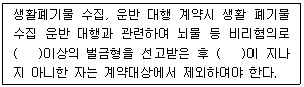
- 500만원, 3년
- 500만원, 5년
- 700만원, 3년
- 700만원, 5년
(정답률: 39%)
76. 폐기물 수입신고를 하려는 자가 신고서에 첨부하여야 하는 서류와 가장 거리가 먼 것은?
- 수입가격이 본선 인도가격(F.O.B)으로 명시된 수입 계약서
- 수입폐기물의 처리계획서
- 수입폐기물의 종류를 확인할 수 있는사진
- 수입폐기물의 분석결과서
(정답률: 42%)
77. 시도지사가 폐기물처리 신고자에게 처리금지를 명령하여야 하는 경우, 그 처리금지를 갈음하여 부과할 수 있는 최대 과징금은?
- 1천만원
- 2천만원
- 5천만원
- 1억원
(정답률: 58%)
78. 사후관리 대상인 폐기물을 매립하는 시설의 사용이 종료되거나 그 시설이 폐쇄된 후 환경부 장관이 토지 이용을 제한할 수 있는 기간에 대한 기준으로 옳은 것은?
- 폐기물매립시설의 사용이 종료되거나 그 시설이 폐쇄된 날부터 20년 이내
- 폐기물매립시설의 사용이 종료되거나 그 시설이 폐쇄된 날부터 25년 이내
- 폐기물매립시설의 사용이 종료되거나 그 시설이 폐쇄된 날부터 30년 이내
- 폐기물매립시설의 사용이 종료되거나 그 시설이 폐쇄된 날부터 40년 이내
(정답률: 73%)
79. 다음은 지정폐기물인 폐석면에 관한 내용이다. ( )안에 옳은 내용은?
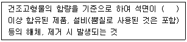
- 1퍼센트
- 2퍼센트
- 3퍼센트
- 5퍼센트
(정답률: 88%)
80. 다음은 매립시설의 사후관리기준 및 방법에 관한 내용 중 발생가스 관리방법(유기성 폐기물을 매립한 폐기물매립시설만 해당된다)에 관한 내용이다. ( )안에 공통으로 들어갈 내용으로 옳은 것은?(오류 신고가 접수된 문제입니다. 반드시 정답과 해설을 확인하시기 바랍니다.)
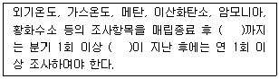
- 1년
- 2년
- 3년
- 4년
(정답률: 19%)
이유는 쓰레기 발생량이 많은 지역에서는 관거수거 시스템으로는 충분히 처리하기 어렵기 때문이다. 따라서 쓰레기 발생량이 적은 지역에서 관거수거 시스템을 도입하는 것이 더 효율적이다.